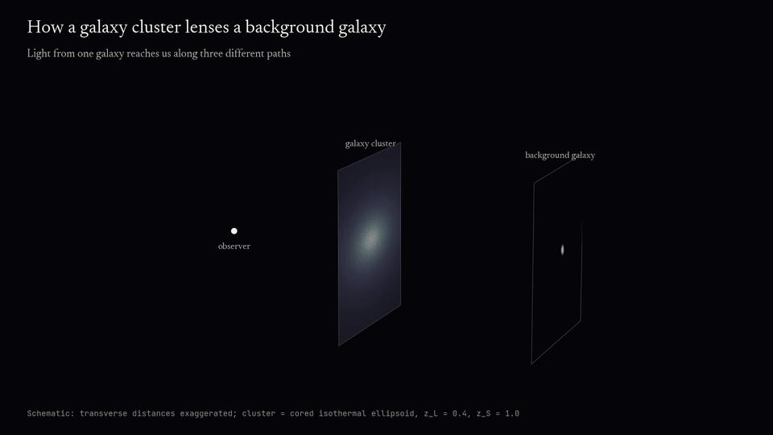
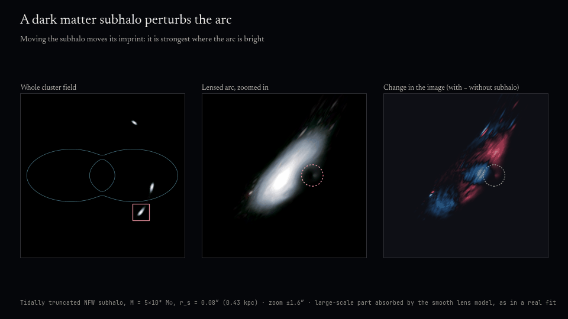
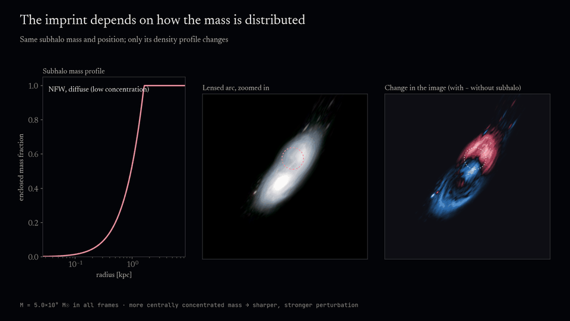
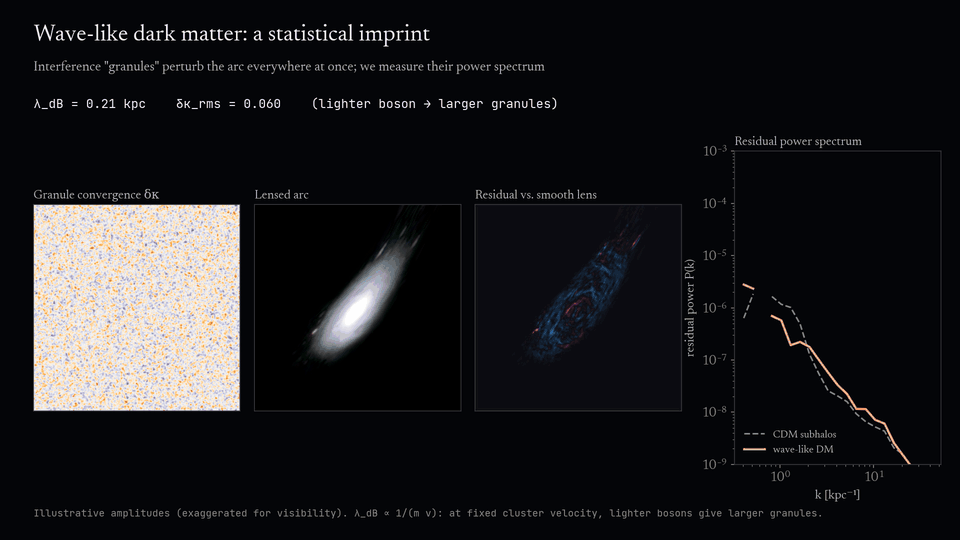
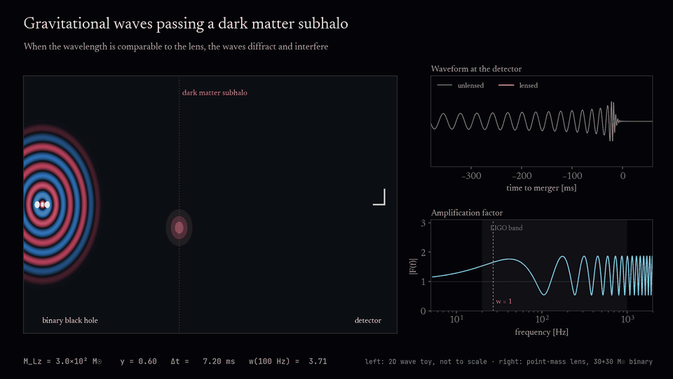
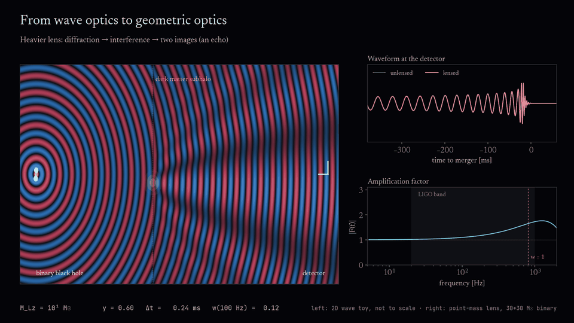

Seeing dark matter through gravitational lensing
Gravity bends light and gravitational waves alike, so the way background sources are distorted tells us where the mass is, including mass that emits no light at all. These animations introduce the ideas behind my research on using lensing to probe dark matter on sub-galactic scales.
Lensing of light by a galaxy cluster








Lensing of gravitational waves




Behind the animations
Everything here is generated by short Python scripts in lensing/python/ and two
dependency-free JavaScript pages. The physics is simplified for clarity, and each figure says
where it departs from a research calculation.